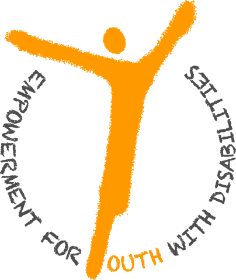

Giao diện chuẩn (Phím tắt alt+0)
Tương phản cao (Phím tắt alt+0)
Chế độ ban đêm (Phím tắt alt+0)
Tăng kích cỡ chữ (Phím tắt alt+w) Đặt lại cỡ chữ chuẩn (Phím tắt alt+r) Giảm kích cỡ chữ (Phím tắt alt+e)
Danh sách ủng hộ (Phím tắt alt+q)
Tiếng Việt (Phím tắt alt+1) English (Phím tắt alt+1)
Bạn đang ở: Lĩnh vực hoạt động » Nâng cao năng lực » Giới thiệu
Menu top ( Phím tắt 6 )
Menu Chính ( Phím tắt 7 )
Nội dung ( Phím tắt 9 )

Được sự tài trợ của The Atlantic Philanthropies tại Việt Nam, Trung tâm Khuyết Tật và Phát Triển (DRD) thực hiện dự án “Nâng cao năng lực cho Thanh niên khuyết tật”, bắt đầu từ 01/2012 đến 6/2015. Dự án hướng đến việc nâng cao năng lực cho TNKT, đồng thời giúp xây dựng năng lực DRD nhằm tiếp tục nỗ lực thực hiện tầm nhìn của tổ chức: một ngày nào đó, tất cả NKT sẽ được bình đẳng về cơ hội tham gia và đóng góp cho sự phát triển của đất nước.
Tiếp tục với những hoạt động trước đây mà DRD đã từng hỗ trợ cho NKT như giới thiệu việc làm, hỗ trợ người khuyết tật nặng sống độc lập, tham vấn đồng cảnh, tổ chức các khóa huấn luyện, hội thảo về các vấn đề liên quan đến NKT…dự án “Nâng cao năng lực cho TNKT” dự kiến sẽ trang bị cho 300 TNKT cơ hội hòa nhập xã hội, giúp TNKT định hướng nghề nghiệp và tạo cầu nối giúp NKT tìm được việc làm trong 3 năm.
Mục đích tổng quát của dự án là tăng cường sự tham gia và đóng góp đầy đủ của thanh niên khuyết tật (TNKT) vào xã hội một cách bình đẳng như những công dân khác bằng cách ứng dụng mô hình hỗ trợ dựa trên quyền của NKT, nâng cao năng lực thực hành công tác xã hội và phương pháp tiếp cận dựa vào nội lực. Mục đích này sẽ đạt được qua hai giai đoạn:
300 TNKT sẽ được lựa chọn dựa theo các tiêu chí lựa chọn phù hợp. Trong số đó, câu chuyện của 10 NKT nặng được hỗ trợ đặc biệt sẽ đóng vai trò quan trọng trong việc thay đổi nhận thức cộng đồng về hình ảnh của NKT.
Với phương pháp “tiếp cận dựa trên quyền và phát triển dựa vào nội lực”, Dự án hướng tới tạo các điều kiện và cơ hội cho TNKT để thử sức và phát huy khả năng từng cá nhân. Để thực hiện được mô hình này, dự án tiến hành:
Nhiệm vụ
Thành phần
Nhiệm vụ
Thành phần
TNKT sau khi được chọn vào dự án sẽ được nhóm Đồng Hành đánh giá nhu cầu để xác định thiết bị hỗ trợ; kiến thức và kỹ năng cần cải thiện, người hỗ trợ cá nhân cho thanh niên khuyết tật nặng (nếu có)... Đây cũng là căn cứ đánh giá đầu vào và theo dõi đầu ra (tác động) sau này.
Căn cứ vào kết quả đánh giá nhu cầu, nhóm Đồng Hành sẽ giúp TNKT xây dựng và thực hiện kế hoạch phát triển cá nhân nhằm đạt mục tiêu thay đổi cuộc sống.
Dự án sẽ kết hợp với nhóm Cố vấn, nhóm Đồng hành và các tổ chức khác để cung cấp các dịch vụ hỗ trợ phù hợp dựa vào kế hoạch phát triển cá nhân.
Nhóm TNKT nòng cốt được thành lập và đi vào hoạt động, từng bước tham gia vào các diễn đàn liên quan đến vấn đề khuyết tật.
Nhóm TNKT sẽ thực hiện các hoạt động truyền thông nâng cao nhận thức về vấn đề khuyết tật.
Những TNKT đã hoàn thành chương trình học nghề, học văn hóa sẽ được giới thiệu việc làm phù hợp.
Với phương pháp “tiếp cận dựa trên quyền và phát triển dựa vào nội lực”, Dự án hướng tới tạo điều kiện và cơ hội cho thanh niên thử sức và phát huy khả năng từng cá nhân:
4.1.Tài trợ các suất học bổng cho sinh viên khuyết tật đang theo học tại các trường Đại học, Cao đẳng, trung cấp nghề trong thành phố HCM.
4.2.Tài trợ suất học nghề tại các trung tâm dạy nghề có uy tín, là một cách hỗ trợ hữu hiệu và tạo cơ hội cho NKT bắt đầu hoà nhập xã hội. Dự án mong muốn 50 TNKT sẽ được tham gia các khóa đào tạo nghề có uy tín, từ đó tạo nên sự thay đổi trong cộng đồng về khả năng của NKT.
4.3.Hỗ trợ và tạo điều kiện để NKT được nhận vào làm việc tại các doanh nghiệp, tố chức: 50 TNKT sẽ là những tấm gương điển hình minh chứng sự thay đổi tích cực về hình ảnh NKT nếu họ nhận được sự hỗ trợ và cơ hội bình đẳng như các thành viên khác trong xã hội. Dự án mong muốn, sau khi tốt nghiệp và qua các khóa huấn luyện kỹ năng, 50 TNKT sẽ được các doanh nghiệp, tổ chức…nhận vào làm việc. Kết quả đánh giá sẽ là động lực giúp NKT vươn lên và hoàn thiện mình. Đồng thời, sự có mặt của NKT trong môi truờng làm việc, tạo nên nét đa dạng trong văn hoá của tổ chức với tinh thần chia sẻ và “đóng góp cho cộng đồng”.
4.4.Hỗ trợ dụng cụ trợ giúp: Dụng cụ hỗ trợ và phương tiện di chuyển luôn là những ưu tiên để giúp NKT chủ động tham gia các hoạt động xã hội và mưu sinh.
4.5.Tài trợ các khoá học ngoại ngữ, vi tính: Dự án dự kiến sẽ trang bị những khoá ngoại ngữ và vi tính tại các Trung tâm đào tạo uy tín, chuẩn bị cho 50 thanh niên hành trang cơ bản để có thể rút ngắn khoảng cách tiếp cận cơ hội việc làm.
DRDVietnam